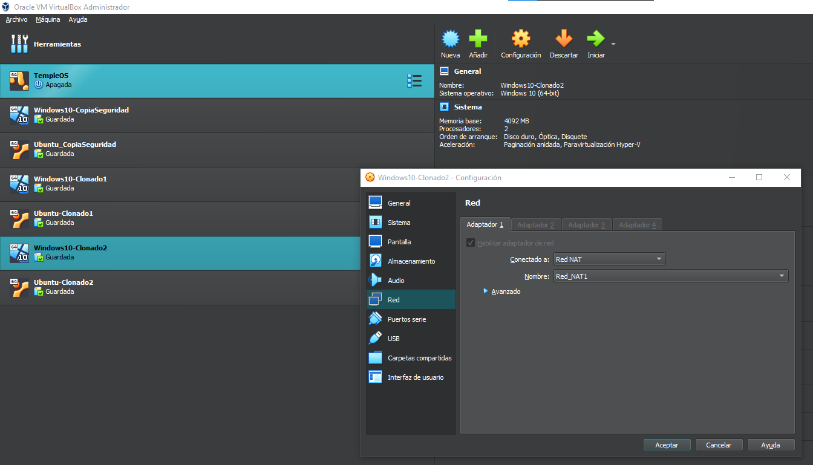

En virtual-box arriba a la izquierda clicamos en archivo, herramientas nos metemos en administrador de red.
Creamos una red NAT la cual llamaremos Red_NAT1 y dejamos las opciones por defecto.
En la máquina Windows entramos en configuración, seleccionamos Red NAT y elegimos la red que hemos creado.
Repetimos el paso anterior desde la máquina Ubuntu.